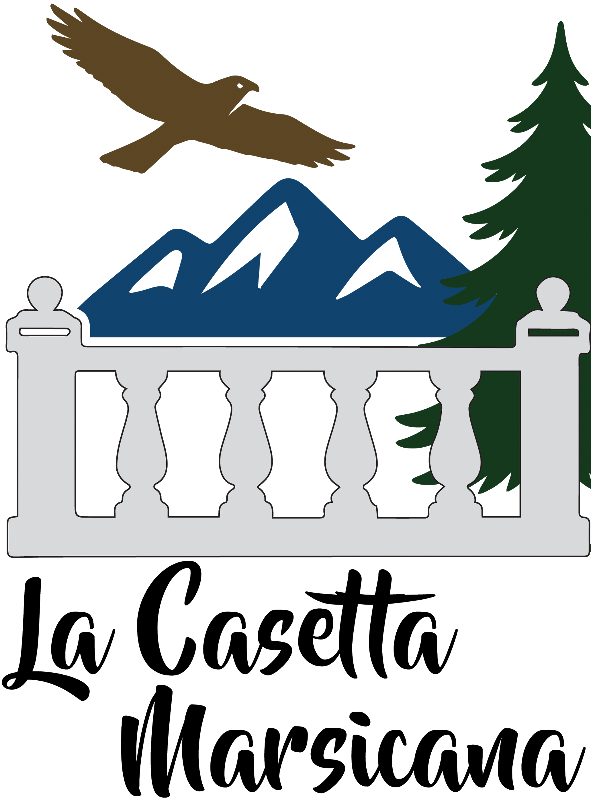

Connessione e intrattenimento
- Connessione Wi-Fi Internet FTTH gratuita in arrivo
- Smart TV a schermo piatto
Natura, quiete e accoglienza
A Cappadocia, nel cuore della Marsica, un luogo semplice dove rallentare, respirare l'Abruzzo e goderti il fascino della montagna, tra paesaggi, silenzi e calore di casa.
Una casa vacanze ispirata ai colori e all’anima del territorio: il verde dei boschi, il blu delle montagne, il calore del legno e la tranquillità della natura.
La Casetta
La Casetta Marsicana nasce per offrire un soggiorno confortevole in un contesto naturale unico. Qui il tempo rallenta: puoi rilassarti, partire alla scoperta dei dintorni o semplicemente goderti il piacere di una pausa lontano dal rumore.
Circondata dalla natura, a due passi da tutto. La sua posizione a Cappadocia è ideale per chi cerca tranquillità e fresco: puoi scegliere tra passeggiate nei boschi e sui sentieri, giornate sugli sci o visite ai borghi marsicani. Tagliacozzo è a circa quindici minuti, gli impianti sciistici di Camporotondo a circa dieci minuti e alcuni dei sentieri boschivi più belli della Marsica sono a pochi passi.
Galleria
Scorri le immagini oppure clicca su una foto per aprirla a tutto schermo.
Servizi
Tutto ciò che trovi a disposizione durante il tuo soggiorno

Territorio
La Marsica è una terra di montagne, boschi, borghi e grandi spazi, ideale per chi ama vivere la natura in ogni stagione. Da Cappadocia puoi alternare giornate sulla neve, passeggiate tra sentieri e faggete, escursioni in quota e visite a luoghi ricchi di storia e fascino.
La Casetta Marsicana è un punto di partenza comodo per scoprire Tagliacozzo, Camporotondo, i Monti Simbruini e Carseolani e alcune delle mete più interessanti della Marsica occidentale.
Contatti
Per informazioni, disponibilità e richieste sul soggiorno puoi scriverci direttamente via email.
Ti risponderemo appena possibile con tutte le informazioni utili per il soggiorno.
Scrivi oraDove siamo
Consulta la mappa per vedere la posizione della casa e organizzare il tuo arrivo.